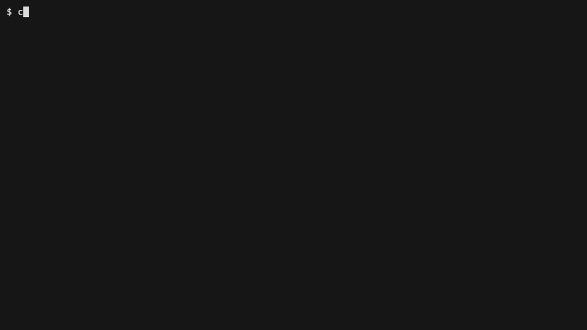

Hand-written code and LLM-written code both drift. A pagination
parameter or an access check comes out slightly differently each time
a person or a model writes it again. Shelf keeps
clay/model.json as the gauge, and every generated file
is checked against it. A master gauge did this job in 19th-century
interchangeable-parts manufacturing: a part passed when it matched.
Shelf is a small app you can run and share. One entity,
Note. The model is the source. Clay writes the types,
the page, the forms, and the handlers. You write the business rule
once, in a touch file, and a spec sits next to it. The repository is
morkeleb/clay-example.
git clone https://github.com/morkeleb/clay-example.git
cd clay-example
npm install
npm run dev
Open
http://127.0.0.1:4317. The header has a role control. It sends the
x-role header. A reader can list notes. A reader who
submits a form gets HTTP 403. An editor can create a note and rename
a note. The store is in memory and starts with two notes.
npm run dev works after install, because the generated
files are already in the project.
clay/model.json owns the fields, the queries, and the
mutations. Six generators sit under clay/generators/,
one folder each, created with clay init generator. Clay
overwrites src/generated/. It writes each file under
src/logic/ once, then leaves it.
src/runtime/ is the server, the store, and the page
script, written by hand.
The index page shows the note list and the selected note.
list query.get query and shows that
note.
permission.
src/logic.npm test fails while the spec still contains
implement this test.
| Generator | Output |
|---|---|
types |
src/generated/types.ts,
src/generated/identity.ts
|
queries |
list and get |
handlers |
mutation handlers and src/generated/routes.ts
|
forms |
one HTML form per mutation |
pages |
src/generated/page.html |
logic |
touch: true rule and spec |
You pay the model edit. Clay writes the files. The clips type the
edit in vi, then show git diff.
Adding archive to clay/model.json is 15
lines of JSON. Clay writes 58 lines across 7 files: the form, the
handler, the page, the route, the type, and the touch file with its
spec. git diff --stat is that count. You pay an LLM for
the 15 lines. Clay writes the 58. That is the token efficiency of
this example.
Shelf is one entity, with no relations, in TypeScript. A larger model writes more from the same kind of edit, and a language with more boilerplate writes more still. This diff is the small case.
Add a field. Clay rewrites the type and the page. Handlers and
queries stay as they are. The touch file still builds a
Note without the new field, so tsc fails
until you update that file.
Add a mutation. Clay writes the form, the handler, and the touch
pair. The new spec is a scaffold. npm test fails until
that test is a real test.

The same move works in a template. One line in the form template adds a Cancel button to every mutation form.
clay/validate-model.ts checks
clay/model.json before Clay runs. This check belongs to
Shelf. An unknown key fails, and the error names the allowed keys.
The mutation list is mutations. The check makes the
model a fixed reference. Every generated file is checked against that
source.
| Place | Allowed keys |
|---|---|
| file | name, generators, model |
model |
identity, types |
| role | name, permissions |
| type |
name, category, fields,
queries, mutations
|
| field |
name, type, required,
primary, description
|
| query |
name, permission,
description
|
| mutation |
name, permission,
description, input
|
input |
fields |
category is entity. A field
type is uuid, string, or
boolean. A query name is
list or get. The entity has one primary
field, and its name is id. Each
permission appears on a role. get takes
that id. list takes no input. A mutation other than
create takes an id input.
create does not take id.
clay init-claude writes
.claude/settings.json. Before an Edit or a Write, Claude
Code runs clay check-generated. A generated path is
refused. The touch file under src/logic/ is allowed,
because Clay leaves it after the first write. That file is where the
business rule lives, so the types and the tests matter there. The
clip is a small agent transcript. The refusal is the hook. See
AI Integration and
check-generated.
The role check is one line in the handler template. Clay copies it into every handler. A reader who calls a mutation gets HTTP 403 from that check. A handler carries the check because the template carries it.
| Command | Action |
|---|---|
npm run dev |
Serve the page on port 4317 |
npm run validate |
Reject a model that renames a concept or adds an unknown key |
npm run generate |
Validate the model, then run Clay |
npm run typecheck |
Run tsc |
npm test |
Require a real spec for each touch file, then run the tests |
npm run check |
Validate, typecheck, and test |
npm run gifs |
Record the clips above |
Record the clips again with
VHS
on your PATH:
npm run gifs
The script returns the model to the baseline when it finishes. The
baseline has no pinned field and no
archive mutation.
The dependency is the published clay-generator package.
To use a sibling checkout at ../clay instead:
cd ../clay
npm link
cd ../clay-example
npm link clay-generator